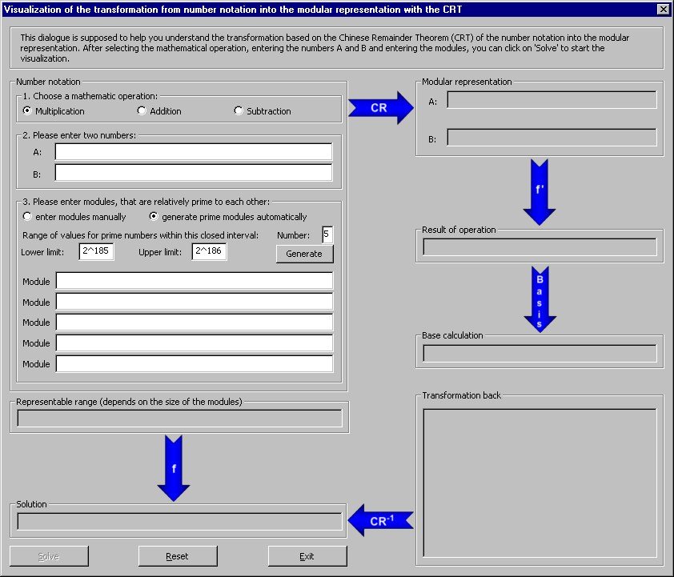
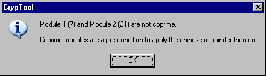
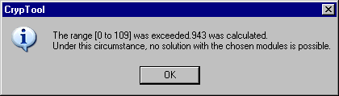
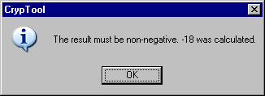
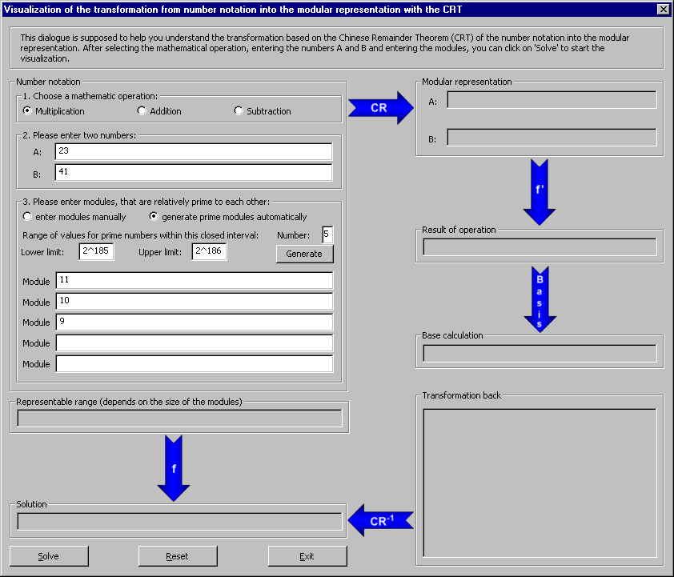
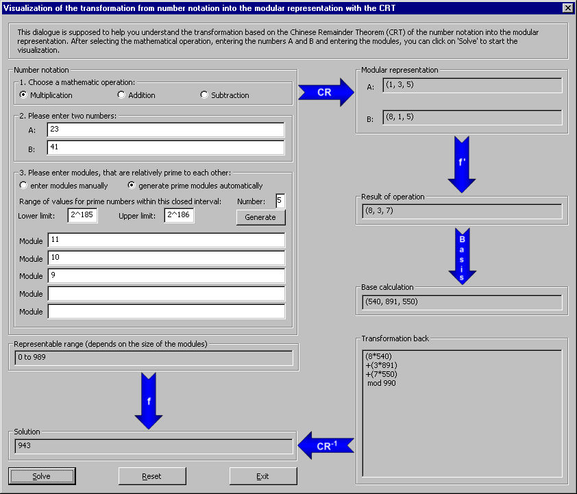

This dialog window can be reached via the menu entry Individual Procedures \ Applications of the Chinese Remainder Theorem (CRT) \ Modular transformation.
This dialog is supposed to help you understand the transformation of the normal number notation into the modular representation and backwards based on the Chinese Remainder Theorem (CRT).
Procedure:

With radio buttons the user can select multiplication, addition or subtraction of two numbers A and B as mathematical operation. Default is multiplication.
Let's look at a simple example by entering 23 as A and 41 as B.
After that the user has to set the range of the numbers, that can be represented by the modular arithmetic using the modules m1 · m2 · … · m5. The modules limit the range of the start numbers and the result.
The user either creates the modules automatically, or enters them manually.
If the modules are not coprime then the user gets a message after clicking the button Solve. In this case the user has to enter a new module.

If the result of a mathematical operation exceeds the representable range, which depends on the size of the modules, a message window informs the user.

An example is the multiplication of 23 and 41. The result 943 exceeds the representable range if you select only the modules 11 and 10 [0, ..., 110-1].
If the result of a mathematical operation is negative a message window informs the user.

An example is the subtraction of 23 and 41. The result is -18 and smaller or less than 0.
Along with the two numbers A = 23 and B= 41 we choose three coprime modules
manually:
m1 = 11, m2 = 10, m3 = 9.
This allows us to represent every integer value between 0 and 989 (m1∙m2∙m3 - 1).

After selecting the mathematical operation, entering the numbers A and B and entering the modules, we can click on Solve to start the visualization.

The representable number range is shown on the output field below the module fields.
The visualization runs clockwise beginning at the CR-Arrow:
1. The number notation is transformed into the modular representation (CR-Arrow).
The numbers A = 23 and B = 41 are mapped to their corresponding remainder triple.
23 mod 11 = 1, 23 mod 10 = 3 und 23 mod 9 = 5 as well as
41 mod 11 = 8, 41 mod 10 = 1 und 41 mod 9 = 5.
We get the triple (1, 3, 5) for the number 23 and (8, 1, 5) for the number 41 displayed in the group Modular representation.
2. The arithmetic operation is executed (f '-arrow)
Then the triples are multiplied with each other
(1 ∙ 8) mod 11 = 8
(3 ∙ 1) mod 10 = 3
(5 ∙ 5) mod 9 = 7
and we get the resulting triple (8, 3, 7) which is displayed in the group Result of operation.
3. The base is computed (Base arrow)
The base is computed to take the result of the operation back to the number notation.
Here is M = 11 · 10 · 9 = 990, M1 = M/11 = 90, M2 = M/10 = 99, M3 = M/9 = 110.
With the help of the extended Euclidean algorithm the inverse numbers Mi mod mi calculated ei equalies Mi-1 mod mi [i = 1, 2, 3]. Theses are called the base words.
e1 = 6 ∙ 90 = 540
e2 = 9 ∙ 99 = 891
e3 = 5 ∙ 110 = 550
The base (540, 891, 550) is displayed in the group Base calculation.
4. The result is transformed back to the number notation (CR-1-arrow)
By forming the dot product of the result vector with the base vector we can
compute the value x.
x = 8 ∙ 540 + 3 ∙ 891 + 7 ∙ 550 mod 990. The calculation
method is shown on the output field Transformation back.
5. The result in conventional value notation (f-arrow)
The Number x = 943 is displayed in the group Result.
By clicking on the Reset button on the dialog the user can clear all fields.
Clicking on Exit closes the dialog and leads back to CrypTool main window.